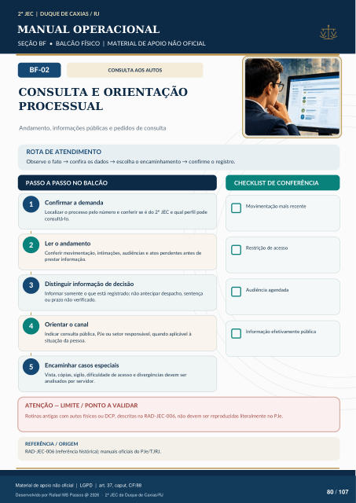

CONSULTA AOS AUTOS
CONSULTA E ORIENTAÇÃO
PROCESSUAL
Andamento, informações públicas e pedidos de consulta
ROTA DE ATENDIMENTO
Observe o fato → confira os dados → escolha o encaminhamento → confirme o registro.
PASSO A PASSO NO BALCÃO
CHECKLIST DE CONFERÊNCIA
Confirmar a demanda
Localizar o processo pelo número e conferir se é do 2º JEC e qual perfil pode consultá-lo.
Ler o andamento
Conferir movimentação, intimações, audiências e atos pendentes antes de prestar informação.
Distinguir informação de decisão
Informar somente o que está registrado; não antecipar despacho, sentença ou prazo não verificado.
Orientar o canal
Indicar consulta pública, PJe ou setor responsável, quando aplicável à situação da pessoa.
Encaminhar casos especiais
Vista, cópias, sigilo, dificuldade de acesso e divergências devem ser analisados por servidor. Movimentação mais recente Restrição de acesso Audiência agendada Informação efetivamente pública
ATENÇÃO — LIMITE / PONTO A VALIDAR
Rotinas antigas com autos físicos ou DCP, descritas na RAD-JEC-006, não devem ser reproduzidas literalmente no PJe.
REFERÊNCIA / ORIGEM
RAD-JEC-006 (referência histórica); manuais oficiais do PJe/TJRJ.
Ver também o infográfico original (página 80)
